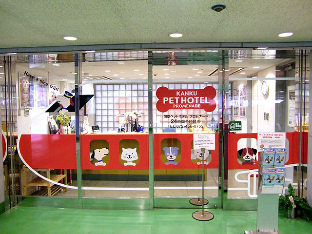

Spa
At our shop, pets are groomed through a luxurious experience at the spa. You have the option of purchasing a single service, or a package of multiple services to give your pet the ultimate spa day. Simply drop your pet off in our spa while you go about your day. See below for the services we offer:
Bath with shampoo and conditioner: $30.00
Nail trim: $15.00
Fur trim: $30.00
Daytime Boarding

Individual care during the day is available for dogs & cats in a separate atrium away from other pets & distractions. Great for puppies who can't play with other dogs yet or senior dogs & cats who prefer to be alone. Day Care for dogs includes 30 minutes of group playtime. We never assign more than three pets to a caregivers in order to assure that your pets are given the best care possible.
Overnight Boarding
Comfortable accommodations with 24/7 supervision by safety-certified Pet Care Specialists make us a great alternative to dog sitting! We have specialists on hand throughout the night for any emergencies.